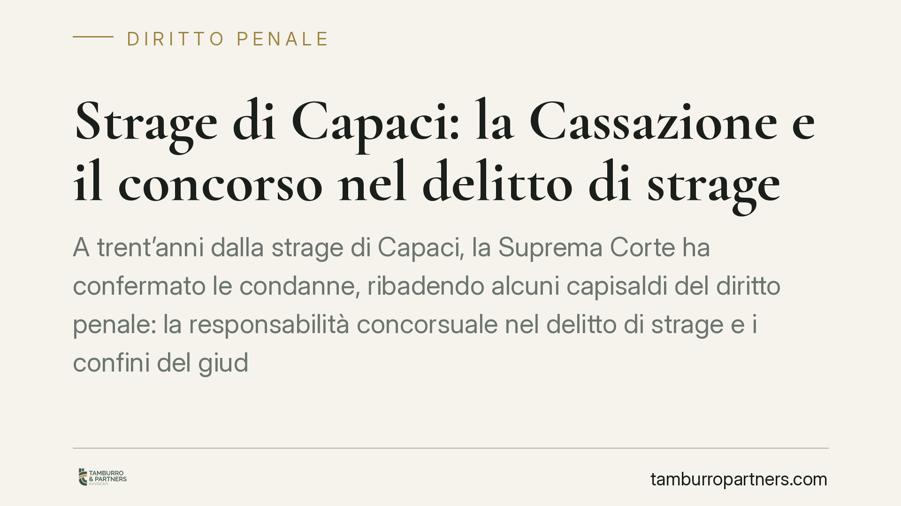

Strage di Capaci: la Cassazione e il concorso nel delitto di strage
A trent'anni dalla strage di Capaci, la Suprema Corte ha confermato le condanne, ribadendo alcuni capisaldi del diritto penale: la responsabilità concorsuale nel delitto di strage e i confini del giudizio di legittimità. Una pronuncia che, al di là del suo peso storico, offre indicazioni tecniche ancora attuali su prova, motivazione e concorso di persone nel reato.

Il fatto
Il 23 maggio 1992, sull'autostrada A29 all'altezza di Capaci, un ordigno uccise il magistrato Giovanni Falcone, la moglie Francesca Morvillo e tre agenti della scorta. La vicenda giudiziaria si è articolata in numerosi processi e gradi di giudizio nell'arco di decenni.
Nell'ultima fase di legittimità la Suprema Corte, chiamata a pronunciarsi sui ricorsi degli imputati e sulle richieste della Procura Generale, ha confermato l'impianto delle condanne. Va precisato che gli estremi puntuali della pronuncia (sezione, numero e data di deposito) devono essere verificati sulla fonte ufficiale prima di ogni citazione tecnica: la materia di criminalità organizzata è tradizionalmente trattata dalla Prima Sezione penale o, per i contrasti di principio, dalle Sezioni Unite.
Inquadramento normativo
Il reato contestato è la strage (art. 422 del codice penale). La norma punisce chi, fuori dai casi previsti per i delitti contro la personalità dello Stato, compie atti tali da porre in pericolo la pubblica incolumità al fine di uccidere. La pena è l'ergastolo se dal fatto deriva la morte di più persone; è la reclusione non inferiore a quindici anni se non deriva la morte di alcuno. L'elemento qualificante non è il singolo omicidio, ma la messa in pericolo di un numero indeterminato di persone.
Sul piano della partecipazione, opera l'art. 110 c.p. (concorso di persone nel reato): risponde del reato ciascuno di coloro che vi hanno concorso, anche con condotte diverse — dall'ideazione all'esecuzione materiale, fino al contributo organizzativo o logistico. Ai fini della responsabilità concorsuale rilevano due profili: il nesso causale tra la condotta del singolo e l'evento, e la consapevolezza del disegno criminoso comune. Chi fornisce un apporto cosciente e volontario alla realizzazione del progetto risponde dell'intero, pur non avendo materialmente premuto il pulsante.
I limiti del giudizio di legittimità
Un punto tecnico centrale riguarda la funzione della Cassazione. Il ricorso per cassazione è ammesso solo nei casi tassativi indicati dall'art. 606 c.p.p.: in sintesi, l'inosservanza o erronea applicazione della legge penale (lett. b), l'inosservanza di norme processuali stabilite a pena di nullità, inammissibilità, inutilizzabilità o decadenza (lett. c), e la mancanza, contraddittorietà o manifesta illogicità della motivazione risultante dal testo del provvedimento o da atti specificamente indicati (lett. e).
Ne deriva un principio spesso frainteso: la Cassazione non è un terzo grado di merito. Non riesamina le prove, non sostituisce la propria valutazione dei fatti a quella dei giudici di merito, non decide se un testimone fosse più o meno attendibile. Verifica che la decisione impugnata sia frutto di corretta applicazione del diritto e sorretta da una motivazione logicamente coerente. La censura sulla motivazione è ammessa solo quando il vizio è manifesto, non quando si propone una diversa e più favorevole lettura del compendio probatorio.
Implicazioni pratiche
Per chi affronta un procedimento penale, la pronuncia conferma alcune regole operative valide ben oltre il caso specifico.
Primo: nel concorso di persone, la difesa non può limitarsi a evidenziare l'assenza di esecuzione materiale. Occorre incidere sul contributo causale e sull'elemento soggettivo, cioè sulla effettiva consapevolezza del progetto comune.
Secondo: le questioni di fatto vanno costruite nei gradi di merito. Ciò che non è stato dedotto e documentato in primo grado e in appello difficilmente trova ingresso in sede di legittimità, dove il perimetro del controllo è ristretto ai vizi di diritto e di motivazione.
Terzo: la solidità della motivazione della sentenza è essa stessa oggetto di verifica. Una decisione ben argomentata resiste; una motivazione illogica o apparente è invece attaccabile.
Cosa fare in concreto
- Impostare la strategia difensiva fin dalle indagini preliminari, quando si formano gli elementi destinati a pesare in giudizio.
- Concentrare l'attività istruttoria e probatoria nei gradi di merito, dove i fatti possono ancora essere accertati e valutati.
- Nel concorso di persone, documentare con precisione l'assenza di contributo causale o di consapevolezza del disegno criminoso.
- Verificare sempre gli estremi ufficiali di una pronuncia (sezione, numero, data di deposito) prima di fondarvi una linea difensiva.
- Riservare al ricorso per cassazione le sole censure compatibili con l'art. 606 c.p.p., evitando di riproporre valutazioni di merito.
---
Contributo informativo a cura di Tamburro & Partners - Avv. Giuseppe Tamburro. Non costituisce parere legale.
Ogni condominio ha una storia a sé.
Se gestisci un'amministrazione e vuoi un confronto su una specifica questione condominiale, scrivi allo studio. Ti rispondiamo entro un giorno lavorativo.